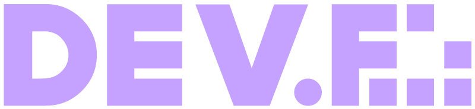

¡Hola! soy Andrea Pineda y soy desarrolladora web
A continuacion te presento información sobre mí, como mi formación académica y proyectos que he desarrollado en programas impartidos por Innovación, Oracle, Dev.f o proyectos personales. Estoy en constante aprendizaje y actualización para mejorar mis habilidades informáticas en general, ya que me gustaría incursionar en el mundo de la ciberseguridad.


Sobre mi
Tengo 23 años, soy mexicana y actualmente estudio Ingeniería en Informática. Estoy en formación para convertirme en Fullstack Web Developer.
Mi formación extracurricular consta de cursos y diplomados que he tenido la oportunidad de cursar con empresas como Miscrosoft y Oracle.
Actualmente me encuentro cursando el Master en Coding en Dev.F y participando en el proyecto Oracle ONE en Alura Latam.
Skills
 HTML |
 JAVASCRIPT |
 CSS |
 C++ |
Mis inicios en programación
 PSEInt |
 Visual Studio Code |
 Matlab |
 Scratch |
Hobbies
|
stadia_controller
Videogames |
movie
Series & Movies |
headphones
Music |
photo_camera
Photography |
terminal
Coding |
Soft Skills
Autodidacta
Compromiso
Determinación
Persistencia
Honestidad
Formación académica
Mi Educación basica la cursé en una primaria particular religiosa llamada "Fray Luis de León" para después ingresar a la Escuela Secundaria Anexa a la Normal Superior de México (ESANS).
Estudié la mayor parte de mi bachillerato en el CECyT 9 del IPN "Juan de Dios Bátiz", en la carrera técnica de Sistemas Digitales.
Tengo el título de técnica en Infórmatica por parte del colegio de Bachilleres.
Me encuentro estudiando Ingeniería Informática en UPIICSA.
 |
 |
Cursos
Simultaneamente tomo cursos y/o diplomados extracurriculares con Oracle, Microsoft, Dev.f y Cisco.

|
 |  |
Proyectos
He participado en certificaciones y cursos impartidos por Microsoft, específicamente en el ciclo especializado, programa de Inovacción del cual obtuve la cerftificación AZ-900 sobre el uso de Azure.
Participé en el curso para Fullstack Developer, en el que desarrolle proyectos como:
- Pokedex
- Clon de página para agendar vacunación
- Página para una pastelería
Insignias
 AZ-900 |
 Oracle: Decodificador |
Experiencia profesional
Encriptador de texto
Challenge Alura Codificador
Registro vacunación
Innovacción LaunchX css


Página pastelería
Innovacion LaunchX html
Contacto
¿Quieres contactarme? Complete el siguiente formulario y me pondré en contacto con usted lo antes posible.